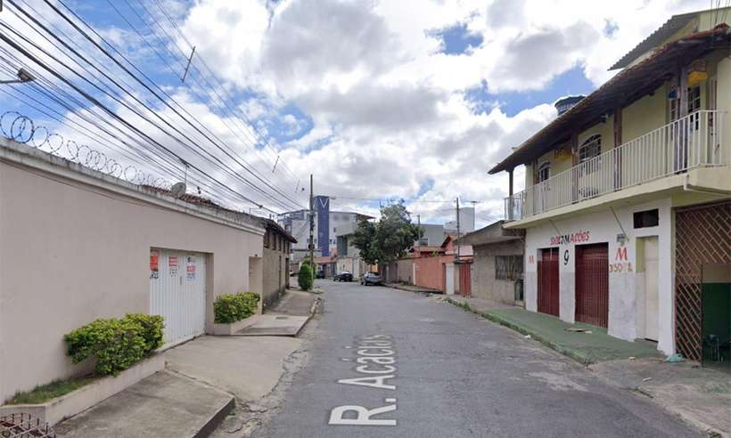

Uma abordagem de rotina da Polícia Militar (PM) acabou impedindo um sequestro na noite
dessa quinta-feira (14/10) no Bairro Eldorado, em Contagem, na Região Metropolitana de
Belo Horizonte.
Pouco depois das 22h, militares que patrulhavam o bairro viram três homens agindo de
forma suspeita perto de um carro na Rua das Acácias. Quando se aproximaram, um deles
saiu correndo em direção à Avenida José Faria da Rocha e foi seguido. Na fuga, ele jogou
uma mochila no chão, que foi recolhida.
Dentro da bolsa, os policiais encontraram um revólver carregado, uma pistola, quatro chaves
de fenda, um alicate de pressão e presilhas de plástico. O suspeito conseguiu escapar, mas os
outros dois, de 22 e 26 anos, foram detidos.Um deles contou que estava lá para sequestrar um
homem que ele não conhecia, mas havia recebido informações de que ele tinha muito dinheiro
em casa e uma arma.
O detido contou que eles não chegaram a cometer o crime antes da abordagem policial porque não
encontraram a vítima. Ele também contou que as informações que recebiam eram passadas por outro
envolvido, que ele não identificou.
Já o segundo homem, segundo a PM, o homem detido contou que o amigo ofereceu dinheiro a ele
para ser levado ao Eldorado. O carro pertence à mãe dele. Dentro do veículo foi encontrado
um cigarro de maconha e ele assumiu a posse. O veículo foi rebocado. Ainda segundo a polícia,
o revólver encontrado na mochila é produto de furto. A dupla foi levada a uma delegacia da
Polícia Civil.